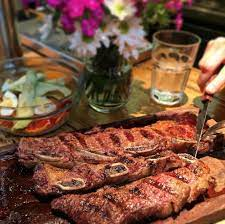

Argentine Barbecue: Asado Banderita

Description
El asado banderita es el corte que se saca de manera transversal del costillar del novillo. Es fino, se puede asar fácil y rápido. También es conocido como asado de tira fina.
Ingredients
- Asado banderita (350gr por persona)
- Sal (cantidad necesaria)
Steps
- Salamos y llevamos las tiras de asado banderita a la parrilla a fuego fuerte hasta que el hueso comience a sangrar.
- Damos vuelta y terminamos la cocción hasta obtener el punto deseado.
- Servimos.